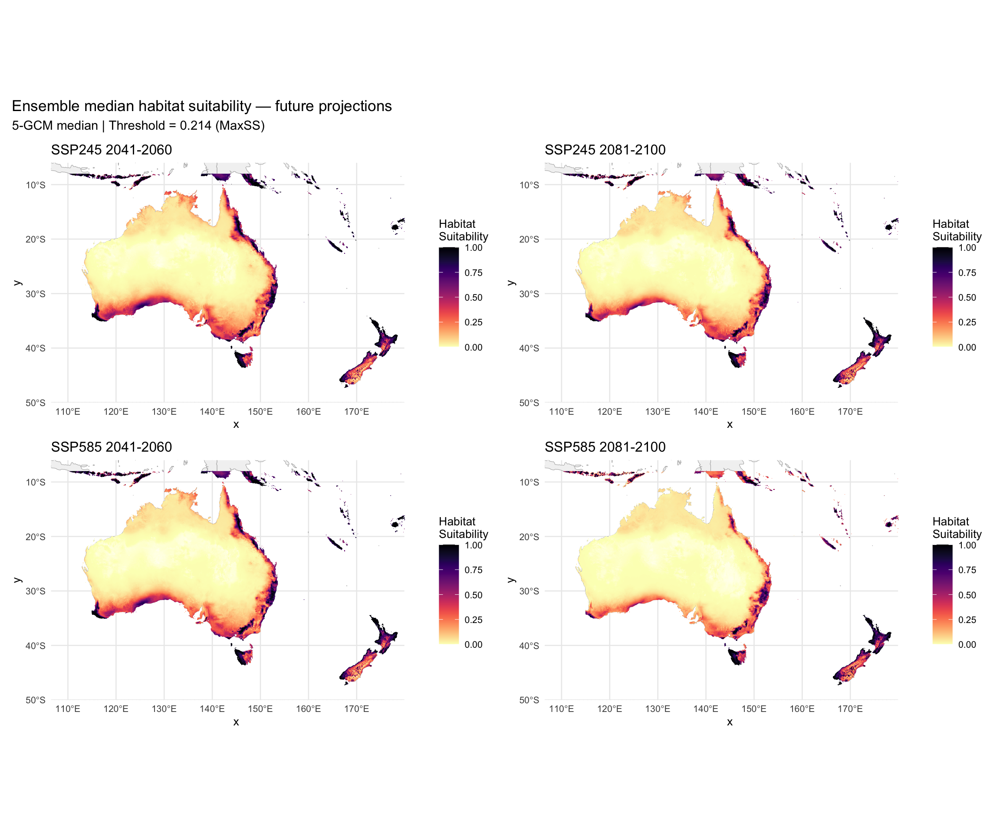
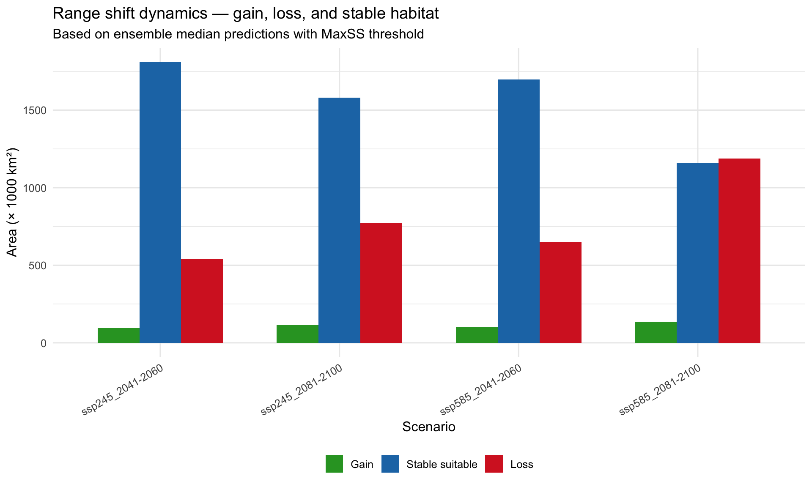
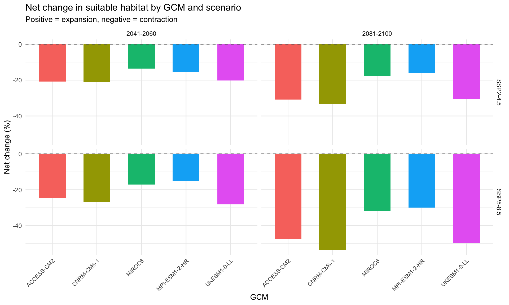

options(java.parameters = "-Xmx8g")
library(tidyverse)
library(terra)
library(sf)
library(predicts)
library(rJava)
library(rnaturalearth)
library(rnaturalearthdata)
library(viridis)Step 9: Future Projections
Overview
Project the optimized MaxEnt model to all 20 future climate scenarios and compute ensemble statistics. Key improvements over v1:
- MESS masking on all projections — novel climate regions masked
- Median ensemble (not mean) as the primary statistic — robust to outliers like the MIROC6 SSP2-4.5 issue from v1
- Range shift dynamics — gain, loss, and stable area calculated (not just net change)
- Per-GCM individual results alongside ensemble statistics
- No dispersal constraints — per user decision (open pastoral landscape)
base_dir <- "~/Library/CloudStorage/OneDrive-CSIRO/OneDrive - Docs/01_Projects/Hlongicornis_SDM/"
processed_v2 <- file.path(base_dir, "processed_data_2")
figures_dir <- file.path(base_dir, "figures_2")
outputs_dir <- file.path(base_dir, "outputs_2")
future_dir <- file.path(base_dir, "data", "future_climate")1. Load model, current prediction, and scenario metadata
# Selected MaxEnt model
selected_model <- readRDS(file.path(processed_v2, "selected_maxent_model.rds"))
# Current climate rasters and prediction
env_current <- rast(file.path(processed_v2, "env_selected_aus_nz.tif"))
pred_current <- rast(file.path(processed_v2, "prediction_current_continuous.tif"))
pred_binary_current <- rast(file.path(processed_v2, "prediction_current_binary.tif"))
# MESS from current (for reference)
mess_current <- rast(file.path(processed_v2, "mess_aus_nz.tif"))
# Threshold
primary_threshold <- as.numeric(readLines(
file.path(processed_v2, "primary_threshold.txt")
))
# Scenario metadata
scenarios <- read_csv(file.path(processed_v2, "future_scenarios.csv"),
show_col_types = FALSE)
scenario_paths <- read_csv(file.path(processed_v2, "future_scenario_paths.csv"),
show_col_types = FALSE)
# Training environment (for MESS calculations)
occ_coords <- read_csv(file.path(processed_v2, "occurrence_coords.csv"),
show_col_types = FALSE)
bg_points <- read_csv(file.path(processed_v2, "background_points.csv"),
show_col_types = FALSE)
env_M <- readRDS(file.path(processed_v2, "env_selected_M.rds"))
selected_vars <- names(env_current)
training_env <- bind_rows(
extract(env_M, as.matrix(occ_coords[, c("lon", "lat")])) |> as_tibble(),
bg_points |> select(all_of(selected_vars))
) |>
drop_na() |>
as.data.frame()
sprintf("Scenarios to project: %d", nrow(scenario_paths))
sprintf("Threshold (MaxSS): %.4f", primary_threshold)[1] "Scenarios to project: 20"
[1] "Threshold (MaxSS): 0.2138"2. Project model to all future scenarios
For each scenario, generate: - Continuous suitability prediction - MESS surface - Binary prediction (with MESS mask)
# Store results in lists
predictions <- list()
mess_surfaces <- list()
binary_preds <- list()
for (i in seq_len(nrow(scenario_paths))) {
sid <- scenario_paths$scenario_id[i]
message(sprintf("[%d/%d] Projecting %s...", i, nrow(scenario_paths), sid))
# Load future climate stack
future_env <- rast(scenario_paths$final_file[i])
# Ensure layer names match
names(future_env) <- selected_vars
# Predict suitability
pred <- predict(future_env, selected_model, type = "cloglog")
names(pred) <- "suitability"
# Compute MESS relative to training environment
mess_future <- mess(future_env, training_env, full = FALSE)
names(mess_future) <- "mess"
# Binary prediction with MESS mask
pred_bin <- pred >= primary_threshold
mess_mask <- mess_future >= 0
pred_bin_masked <- mask(pred_bin, mess_mask, maskvalues = FALSE)
# Store
predictions[[sid]] <- pred
mess_surfaces[[sid]] <- mess_future
binary_preds[[sid]] <- pred_bin_masked
# Save individual rasters
writeRaster(pred,
file.path(processed_v2, paste0("pred_future_", sid, ".tif")),
overwrite = TRUE)
}
sprintf("Projected %d scenarios successfully", length(predictions))[1] "Projected 20 scenarios successfully"3. Compute ensemble statistics for each SSP × period combination
For each of the 4 SSP × period combinations, compute median, mean, SD, and range across the 5 GCMs.
# Define the 4 scenario groups
ssp_periods <- expand_grid(
ssp = c("245", "585"),
period = c("2041-2060", "2081-2100")
)
ensemble_results <- list()
for (j in seq_len(nrow(ssp_periods))) {
ssp_j <- ssp_periods$ssp[j]
period_j <- ssp_periods$period[j]
group_id <- sprintf("ssp%s_%s", ssp_j, period_j)
# Find all scenarios matching this SSP × period
matching <- scenario_paths %>%
filter(ssp == ssp_j, period == period_j)
if (nrow(matching) == 0) next
# Stack all GCM predictions for this group
pred_stack <- rast(lapply(matching$scenario_id, function(sid) predictions[[sid]]))
# Compute ensemble statistics
ens_median <- app(pred_stack, fun = "median", na.rm = TRUE)
ens_mean <- app(pred_stack, fun = "mean", na.rm = TRUE)
ens_sd <- app(pred_stack, fun = "sd", na.rm = TRUE)
ens_min <- app(pred_stack, fun = "min", na.rm = TRUE)
ens_max <- app(pred_stack, fun = "max", na.rm = TRUE)
names(ens_median) <- "median"
names(ens_mean) <- "mean"
names(ens_sd) <- "sd"
names(ens_min) <- "min"
names(ens_max) <- "max"
# Binary from median prediction
ens_binary <- ens_median >= primary_threshold
# Save ensemble rasters
ens_stack <- c(ens_median, ens_mean, ens_sd, ens_min, ens_max)
writeRaster(ens_stack,
file.path(processed_v2, paste0("ensemble_", group_id, ".tif")),
overwrite = TRUE)
ensemble_results[[group_id]] <- list(
median = ens_median,
mean = ens_mean,
sd = ens_sd,
binary = ens_binary,
n_gcms = nrow(matching)
)
sprintf("Ensemble %s: %d GCMs stacked", group_id, nrow(matching))
}4. Range shift dynamics — gain, loss, stable
For each future scenario, classify every cell into: - Stable suitable — suitable in both current and future - Gain — unsuitable now, suitable in future - Loss — suitable now, unsuitable in future - Stable unsuitable — unsuitable in both
# Current binary (unmasked for shift calculations)
current_binary <- pred_current >= primary_threshold
shift_results <- list()
for (group_id in names(ensemble_results)) {
future_binary <- ensemble_results[[group_id]]$binary
# Classify cells
# current = 1, future = 1 → stable suitable (value = 3)
# current = 0, future = 1 → gain (value = 2)
# current = 1, future = 0 → loss (value = 1)
# current = 0, future = 0 → stable unsuitable (value = 0)
shift_rast <- current_binary * 2 + future_binary
# Recode: 3 = stable suitable, 2 = loss, 1 = gain, 0 = stable unsuitable
# Actually: current*2 + future gives:
# 1*2 + 1 = 3 → stable suitable
# 1*2 + 0 = 2 → loss
# 0*2 + 1 = 1 → gain
# 0*2 + 0 = 0 → stable unsuitable
names(shift_rast) <- "shift_class"
# Calculate areas
cell_area_km2 <- prod(res(current_binary)) * 111^2 *
cos(mean(ext(current_binary)[3:4]) * pi / 180)
n_stable_suit <- global(shift_rast == 3, sum, na.rm = TRUE)[[1]]
n_gain <- global(shift_rast == 1, sum, na.rm = TRUE)[[1]]
n_loss <- global(shift_rast == 2, sum, na.rm = TRUE)[[1]]
n_stable_unsuit <- global(shift_rast == 0, sum, na.rm = TRUE)[[1]]
shift_results[[group_id]] <- tibble(
scenario = group_id,
stable_suitable_km2 = n_stable_suit * cell_area_km2,
gain_km2 = n_gain * cell_area_km2,
loss_km2 = n_loss * cell_area_km2,
stable_unsuitable_km2 = n_stable_unsuit * cell_area_km2,
net_change_km2 = (n_gain - n_loss) * cell_area_km2,
current_suitable_km2 = (n_stable_suit + n_loss) * cell_area_km2,
future_suitable_km2 = (n_stable_suit + n_gain) * cell_area_km2,
pct_change = round(100 * (n_gain - n_loss) / (n_stable_suit + n_loss), 1)
)
# Save shift raster
writeRaster(shift_rast,
file.path(processed_v2, paste0("range_shift_", group_id, ".tif")),
overwrite = TRUE)
}
shift_table <- bind_rows(shift_results)
shift_table# A tibble: 4 × 9
scenario stable_suitable_km2 gain_km2 loss_km2 stable_unsuitable_km2
<chr> <dbl> <dbl> <dbl> <dbl>
1 ssp245_2041-2060 1811471. 96342. 538689. 5846447.
2 ssp245_2081-2100 1579371. 114945. 770789. 5827843.
3 ssp585_2041-2060 1698226. 100138. 651935. 5842651.
4 ssp585_2081-2100 1161954. 137213. 1188206. 5805576.
# ℹ 4 more variables: net_change_km2 <dbl>, current_suitable_km2 <dbl>,
# future_suitable_km2 <dbl>, pct_change <dbl>5. Per-GCM results
# For each individual scenario, compute suitable area and net change
gcm_results <- list()
for (i in seq_len(nrow(scenario_paths))) {
sid <- scenario_paths$scenario_id[i]
future_binary <- predictions[[sid]] >= primary_threshold
shift <- current_binary * 2 + future_binary
cell_area_km2 <- prod(res(current_binary)) * 111^2 *
cos(mean(ext(current_binary)[3:4]) * pi / 180)
n_gain <- global(shift == 1, sum, na.rm = TRUE)[[1]]
n_loss <- global(shift == 2, sum, na.rm = TRUE)[[1]]
n_stable <- global(shift == 3, sum, na.rm = TRUE)[[1]]
n_current <- n_stable + n_loss
# MESS extrapolation for this scenario
n_novel <- global(mess_surfaces[[sid]] < 0, sum, na.rm = TRUE)[[1]]
n_valid <- global(!is.na(mess_surfaces[[sid]]), sum)[[1]]
gcm_results[[sid]] <- tibble(
scenario_id = sid,
gcm = scenario_paths$gcm[i],
ssp = scenario_paths$ssp[i],
period = scenario_paths$period[i],
current_suitable_km2 = n_current * cell_area_km2,
future_suitable_km2 = (n_stable + n_gain) * cell_area_km2,
gain_km2 = n_gain * cell_area_km2,
loss_km2 = n_loss * cell_area_km2,
net_change_km2 = (n_gain - n_loss) * cell_area_km2,
pct_change = round(100 * (n_gain - n_loss) / max(n_current, 1), 1),
pct_extrapolation = round(100 * n_novel / max(n_valid, 1), 1)
)
}
gcm_table <- bind_rows(gcm_results) %>%
arrange(ssp, period, gcm)
gcm_table# A tibble: 20 × 11
scenario_id gcm ssp period current_suitable_km2 future_suitable_km2
<chr> <chr> <dbl> <chr> <dbl> <dbl>
1 ACCESS-CM2_ssp24… ACCE… 245 2041-… 2350160. 1861238.
2 CNRM-CM6-1_ssp24… CNRM… 245 2041-… 2350160. 1851284.
3 MIROC6_ssp245_20… MIRO… 245 2041-… 2350160. 2029651.
4 MPI-ESM1-2-HR_ss… MPI-… 245 2041-… 2350160. 1986646.
5 UKESM1-0-LL_ssp2… UKES… 245 2041-… 2350160. 1875157.
6 ACCESS-CM2_ssp24… ACCE… 245 2081-… 2350160. 1626626.
7 CNRM-CM6-1_ssp24… CNRM… 245 2081-… 2350160. 1562543.
8 MIROC6_ssp245_20… MIRO… 245 2081-… 2350160. 1930156.
9 MPI-ESM1-2-HR_ss… MPI-… 245 2081-… 2350160. 1974294.
10 UKESM1-0-LL_ssp2… UKES… 245 2081-… 2350160. 1634407.
11 ACCESS-CM2_ssp58… ACCE… 585 2041-… 2350160. 1772866.
12 CNRM-CM6-1_ssp58… CNRM… 585 2041-… 2350160. 1721079.
13 MIROC6_ssp585_20… MIRO… 585 2041-… 2350160. 1948136.
14 MPI-ESM1-2-HR_ss… MPI-… 585 2041-… 2350160. 1997525.
15 UKESM1-0-LL_ssp5… UKES… 585 2041-… 2350160. 1690595.
16 ACCESS-CM2_ssp58… ACCE… 585 2081-… 2350160. 1237652.
17 CNRM-CM6-1_ssp58… CNRM… 585 2081-… 2350160. 1089447.
18 MIROC6_ssp585_20… MIRO… 585 2081-… 2350160. 1603962.
19 MPI-ESM1-2-HR_ss… MPI-… 585 2081-… 2350160. 1646891.
20 UKESM1-0-LL_ssp5… UKES… 585 2081-… 2350160. 1179027.
# ℹ 5 more variables: gain_km2 <dbl>, loss_km2 <dbl>, net_change_km2 <dbl>,
# pct_change <dbl>, pct_extrapolation <dbl>6. Ensemble summary with uncertainty
# Summarise per-GCM results by SSP × period
uncertainty_summary <- gcm_table %>%
group_by(ssp, period) %>%
summarise(
n_gcms = n(),
median_net_change_km2 = median(net_change_km2),
mean_net_change_km2 = mean(net_change_km2),
sd_net_change_km2 = sd(net_change_km2),
min_net_change_km2 = min(net_change_km2),
max_net_change_km2 = max(net_change_km2),
median_pct_change = median(pct_change),
range_pct_change = sprintf("%.1f to %.1f%%", min(pct_change), max(pct_change)),
median_extrapolation = median(pct_extrapolation),
.groups = "drop"
)
uncertainty_summary# A tibble: 4 × 11
ssp period n_gcms median_net_change_km2 mean_net_change_km2
<dbl> <chr> <int> <dbl> <dbl>
1 245 2041-2060 5 -475003. -429365.
2 245 2081-2100 5 -715753. -604555.
3 585 2041-2060 5 -577294. -524120.
4 585 2081-2100 5 -1112508. -998764.
# ℹ 6 more variables: sd_net_change_km2 <dbl>, min_net_change_km2 <dbl>,
# max_net_change_km2 <dbl>, median_pct_change <dbl>, range_pct_change <chr>,
# median_extrapolation <dbl>7. Visualise ensemble projections
world_map <- ne_countries(scale = "medium", returnclass = "sf")
# Create maps for each scenario group
plot_list <- list()
for (group_id in names(ensemble_results)) {
median_df <- as.data.frame(ensemble_results[[group_id]]$median, xy = TRUE) %>%
filter(!is.na(median))
p <- ggplot() +
geom_sf(data = world_map, fill = "grey95", colour = "grey70", linewidth = 0.2) +
geom_raster(data = median_df, aes(x = x, y = y, fill = median)) +
scale_fill_gradientn(
colours = c("white", magma(256, direction = -1)),
limits = c(0, 1),
name = "Habitat\nSuitability"
) +
coord_sf(xlim = c(110, 180), ylim = c(-48, -8)) +
labs(title = gsub("_", " ", toupper(group_id))) +
theme_minimal(base_size = 10) +
theme(legend.position = "right")
plot_list[[group_id]] <- p
}
library(patchwork)
wrap_plots(plot_list, ncol = 2) +
plot_annotation(
title = "Ensemble median habitat suitability — future projections",
subtitle = sprintf("5-GCM median | Threshold = %.3f (MaxSS)", primary_threshold)
)
ggsave(file.path(figures_dir, "09_ensemble_suitability_maps.png"),
width = 12, height = 10, dpi = 300)
shift_long <- shift_table %>%
select(scenario, stable_suitable_km2, gain_km2, loss_km2) %>%
pivot_longer(-scenario, names_to = "category", values_to = "area_km2") %>%
mutate(
category = case_when(
category == "stable_suitable_km2" ~ "Stable suitable",
category == "gain_km2" ~ "Gain",
category == "loss_km2" ~ "Loss"
),
category = factor(category, levels = c("Gain", "Stable suitable", "Loss"))
)
ggplot(shift_long, aes(x = scenario, y = area_km2 / 1000, fill = category)) +
geom_col(position = "dodge", width = 0.7) +
scale_fill_manual(values = c(
"Gain" = "#2ca02c",
"Stable suitable" = "#1f77b4",
"Loss" = "#d62728"
)) +
labs(
title = "Range shift dynamics — gain, loss, and stable habitat",
subtitle = "Based on ensemble median predictions with MaxSS threshold",
x = "Scenario", y = "Area (× 1000 km²)", fill = NULL
) +
theme_minimal(base_size = 12) +
theme(legend.position = "bottom", axis.text.x = element_text(angle = 30, hjust = 1))
ggsave(file.path(figures_dir, "09_range_shift_dynamics.png"),
width = 10, height = 6, dpi = 300)
ggplot(gcm_table, aes(x = gcm, y = pct_change, fill = gcm)) +
geom_col(width = 0.6) +
facet_grid(ssp ~ period, labeller = labeller(
ssp = c("245" = "SSP2-4.5", "585" = "SSP5-8.5")
)) +
geom_hline(yintercept = 0, linetype = "dashed", colour = "grey40") +
labs(
title = "Net change in suitable habitat by GCM and scenario",
subtitle = "Positive = expansion, negative = contraction",
x = "GCM", y = "Net change (%)", fill = "GCM"
) +
theme_minimal(base_size = 11) +
theme(
axis.text.x = element_text(angle = 45, hjust = 1, size = 8),
legend.position = "none"
)
ggsave(file.path(figures_dir, "09_gcm_variability.png"),
width = 10, height = 6, dpi = 300)
8. Save outputs
# Save range shift summary tables
write_csv(shift_table, file.path(outputs_dir, "range_shift_summary_v2.csv"))
write_csv(gcm_table, file.path(outputs_dir, "per_gcm_results_v2.csv"))
write_csv(uncertainty_summary, file.path(outputs_dir, "ensemble_uncertainty_v2.csv"))
sprintf("Future projection outputs saved to %s", outputs_dir)[1] "Future projection outputs saved to ~/Library/CloudStorage/OneDrive-CSIRO/OneDrive - Docs/01_Projects/Hlongicornis_SDM//outputs_2"Summary
# High-level summary
shift_table %>%
select(scenario, current_suitable_km2, future_suitable_km2,
gain_km2, loss_km2, net_change_km2, pct_change) %>%
mutate(across(where(is.numeric), ~ round(., 0)))# A tibble: 4 × 7
scenario current_suitable_km2 future_suitable_km2 gain_km2 loss_km2
<chr> <dbl> <dbl> <dbl> <dbl>
1 ssp245_2041-2060 2350160 1907812 96342 538689
2 ssp245_2081-2100 2350160 1694316 114945 770789
3 ssp585_2041-2060 2350160 1798363 100138 651935
4 ssp585_2081-2100 2350160 1299166 137213 1188206
# ℹ 2 more variables: net_change_km2 <dbl>, pct_change <dbl># Uncertainty overview
uncertainty_summary %>%
select(ssp, period, median_pct_change, range_pct_change, median_extrapolation)# A tibble: 4 × 5
ssp period median_pct_change range_pct_change median_extrapolation
<dbl> <chr> <dbl> <chr> <dbl>
1 245 2041-2060 -20.2 -21.2 to -13.6% 60.2
2 245 2081-2100 -30.5 -33.5 to -16.0% 70.9
3 585 2041-2060 -24.6 -28.1 to -15.0% 62.9
4 585 2081-2100 -47.3 -53.6 to -29.9% 80.8Session Information
sessionInfo()R version 4.4.1 (2024-06-14)
Platform: aarch64-apple-darwin20
Running under: macOS 26.2
Matrix products: default
BLAS: /Library/Frameworks/R.framework/Versions/4.4-arm64/Resources/lib/libRblas.0.dylib
LAPACK: /Library/Frameworks/R.framework/Versions/4.4-arm64/Resources/lib/libRlapack.dylib; LAPACK version 3.12.0
locale:
[1] C.UTF-8/C.UTF-8/C.UTF-8/C/C.UTF-8/C.UTF-8
time zone: Australia/Brisbane
tzcode source: internal
attached base packages:
[1] stats graphics grDevices utils datasets methods base
other attached packages:
[1] patchwork_1.3.2 viridis_0.6.5 viridisLite_0.4.2
[4] rnaturalearthdata_1.0.0 rnaturalearth_1.1.0 rJava_1.0-11
[7] predicts_0.1-19 sf_1.0-24 terra_1.8-93
[10] lubridate_1.9.4 forcats_1.0.0 stringr_1.6.0
[13] dplyr_1.1.4 purrr_1.1.0 readr_2.1.6
[16] tidyr_1.3.1 tibble_3.3.1 ggplot2_4.0.0
[19] tidyverse_2.0.0
loaded via a namespace (and not attached):
[1] gtable_0.3.6 xfun_0.53 htmlwidgets_1.6.4 tzdb_0.5.0
[5] vctrs_0.7.1 tools_4.4.1 generics_0.1.4 parallel_4.4.1
[9] proxy_0.4-29 pkgconfig_2.0.3 KernSmooth_2.23-26 RColorBrewer_1.1-3
[13] S7_0.2.0 lifecycle_1.0.5 compiler_4.4.1 farver_2.1.2
[17] textshaping_1.0.3 codetools_0.2-20 htmltools_0.5.8.1 class_7.3-23
[21] yaml_2.3.10 pillar_1.11.1 crayon_1.5.3 classInt_0.4-11
[25] tidyselect_1.2.1 digest_0.6.37 stringi_1.8.7 labeling_0.4.3
[29] fastmap_1.2.0 grid_4.4.1 cli_3.6.5 magrittr_2.0.4
[33] utf8_1.2.6 e1071_1.7-17 withr_3.0.2 scales_1.4.0
[37] bit64_4.6.0-1 timechange_0.3.0 rmarkdown_2.29 bit_4.6.0
[41] gridExtra_2.3 ragg_1.5.0 hms_1.1.4 evaluate_1.0.5
[45] knitr_1.50 rlang_1.1.7 Rcpp_1.1.1 glue_1.8.0
[49] DBI_1.2.3 vroom_1.7.0 jsonlite_2.0.0 R6_2.6.1
[53] systemfonts_1.2.3 units_1.0-0